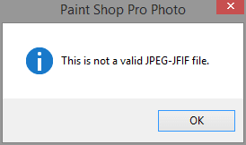

JPEG error when downloading photos using OneDrive (iOS7)¶
If you enabled the photo backup option in the OneDrive app for iOS7, photos are backed up automatically to your Microsoft cloud storage. However, you may encounter an error if you download the JPEG from OneDrive and attempt to open the file in a photo-editing application such as Corel Paint Shop Pro or Adobe Photoshop.
The error describes a Could not complete your request because a JPEG marker segment length is too short (the file may be truncated or incomplete) in Adobe Photoshop CS4. Corel Paint Shop Pro, on the other hand will display a This is not a valid JPEG-JFIF file. error.
If you encounter this error, there are a few workarounds to this issue:
Download the photo directly to your PC from your iOS7 device using a USB cable.
E-mail the photo or use a different online storage service to download the photo from your iOS7’s camera roll.
From your iOS7 device, open the photo using any photo app such as Adobe Photoshop Express for iOS, do a minor edit (crop or Auto Fix) and save the photo. Once the edited image is uploaded to OneDrive, you should no longer have problems downloading and editing the photo in a dedicated image editor.
If you’ve already downloaded the photo using OneDrive to your Windows computer, you will not be able to convert the JPEG to a different format using Photoshop or Paint Shop due to the error. However, you can open the file in Microsoft Office Picture Manager and export the file to PNG. After you save the JPEG to PNG, you should have no problems opening the file in a dedicated image editor.
Note
Microsoft Office Picture Manager is included with older versions of Microsoft Office.